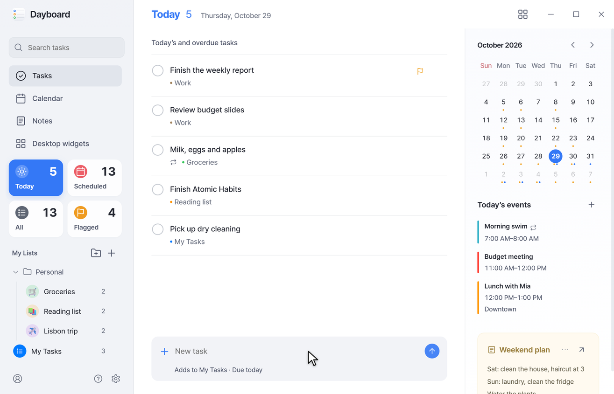
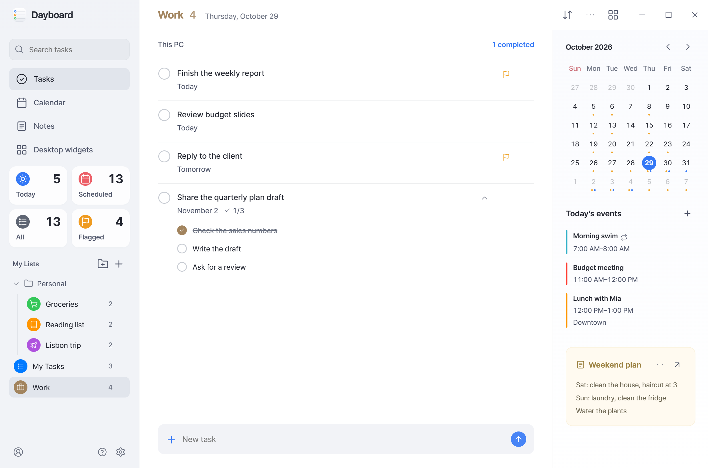
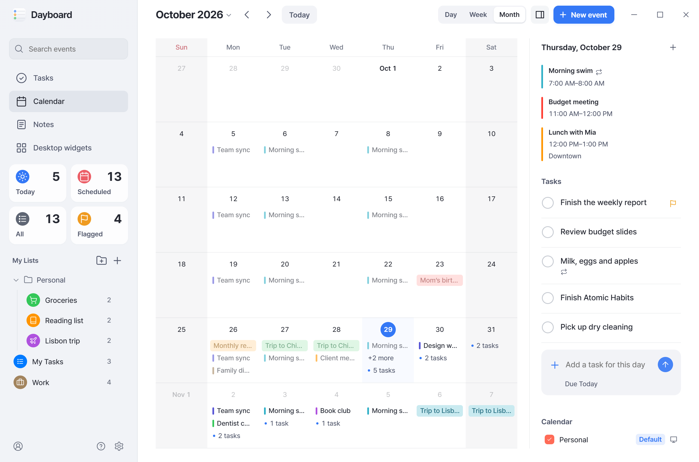
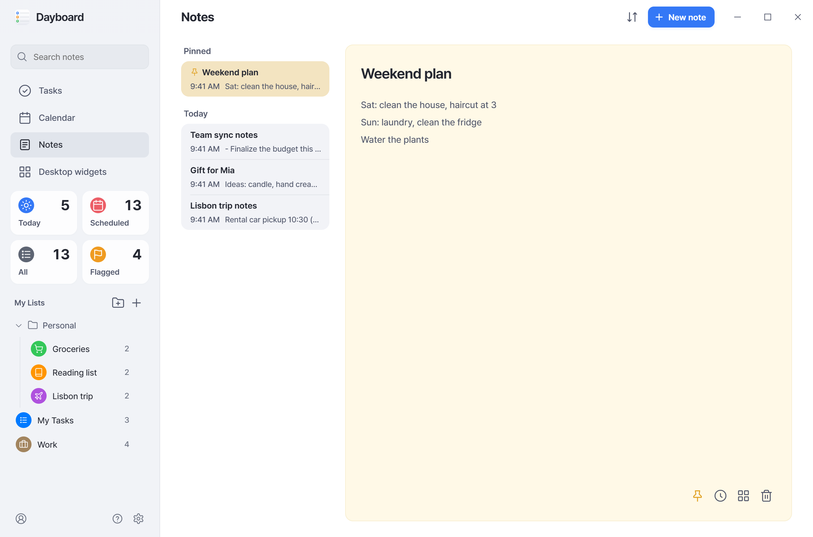
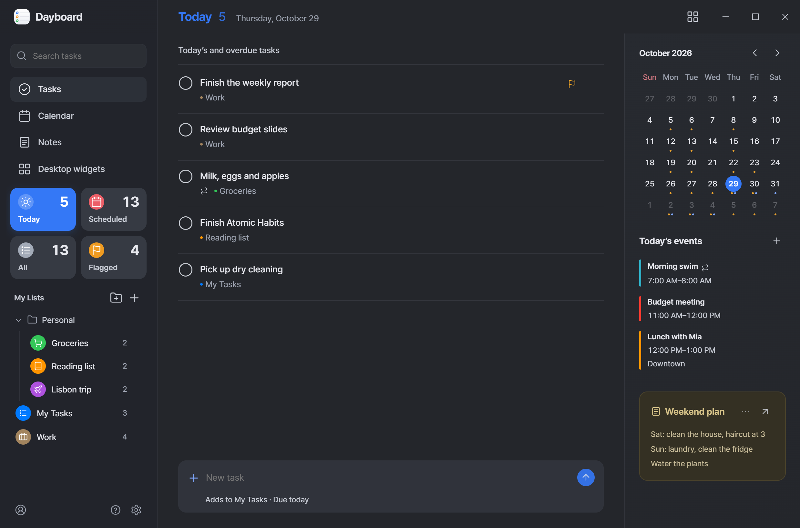
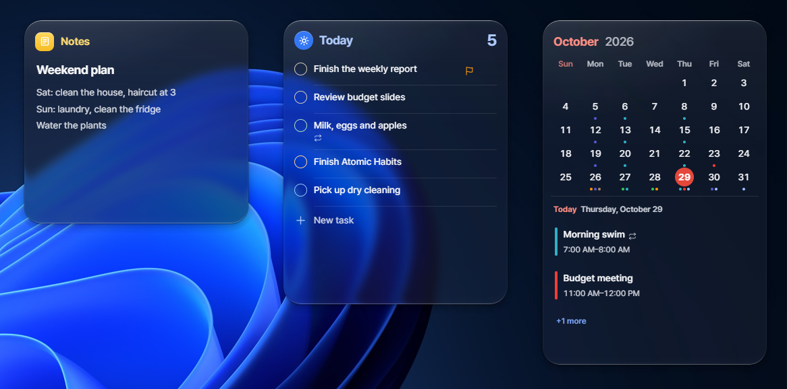

Dayboard
Clean like a Mac or iPhone.
Quick on Windows.
Tasks, calendar and notes in one app, with desktop widgets.
Free · Windows x64 · Open source (MIT)

Why Dayboard
The Reminders, Calendar and Notes apps on a Mac or iPhone, and their widgets, look good and are a pleasure to use. I wanted the same on Windows, so I built it. Keep it clean, keep it quick — those are the two rules it's built on.
Clean
A tidy layout and glassy desktop widgets: toward clear they follow the wallpaper, toward tinted the app's light or dark mode.
Quick
Your data lives on your PC, so every screen opens without waiting. Type "tomorrow 3pm meeting" and the date is set.
All in one place
Connect Microsoft, Google or iCloud and stay in sync with your other PCs and phones — or use it with no account at all.
Private
No server, no sign-up, no ads. Deleted notes stay for 30 days, and each note keeps earlier versions.





Screenshots use sample data.
Install
- Download
Dayboard-<version>.exefrom the latest release and run it. No admin rights needed. - Once installed, new versions download on their own. Choose "Restart now to update" in Settings to switch to the new version.
- The installer isn't signed yet, so Windows Smart App Control may block it at first. Wait a moment and run it again.
Connecting Google
You sign in on Google's own page. Dayboard asks only to read and edit Google Tasks and Calendar, to use its own hidden folder in Google Drive for notes sync, and for your email and profile to confirm the account. What it receives stays on your PC and is never sent to the developer or anyone else. Disconnect any time from the Accounts screen or on your Google Account permissions page. Details are in the Privacy Policy.